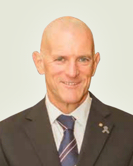

Vince Kelly | APM GAICD
Innovative strategic leadership & advocacy
Post PO Box 1263, Dickson ACT 2602
Mobile
+61 (0) 417 819 342 | Email
vk@vincekelly.com.au
About
 My career evolved from early operational roles in community policing and as a Senior Detective undertaking complex and sensitive criminal investigations, progressing to senior management roles, working closely with a wide range of organisations in public and private sectors.
Between May 2001 and May 2015, I held the position of President/CEO of the Northern Territory Police Association, a small to medium sized Not for Profit (NFP) organisation. As President/CEO, I provided strategic leadership across financial administration, business analysis, ethical and practical governance and accountability, human resource management & development, organisational growth and capacity building.
My extensive exposure to the NFP and Small/Medium Enterprise (SME) sector has informed my in-depth understanding and appreciation of the relevant political, economic, financial, legislative and social operating environments at community, state and national levels.
I offer superior advocacy, negotiation and representational skills and a confident ability to communicate with varied and complex stakeholders and audiences. My recognised leadership skills and experience have enabled me to successfully drive change, promote public and small group advocacy, manage media relationships and facilitate holistic strategic management processes. I have a demonstrated track record for delivering significant outcomes and identifying emerging political, economic and social issues that may impact the organisation.
My skills and experience in the NFP sector have culminated in my appointment to the boards of the Australian College of Midwives and Parkinson’s Australia (President/Chair).
I am currently engaged as the Special Projects Officer with the Australian Federal Police Association, providing high-level support and strategic governance advice to the President and Board.
I continue to seek opportunities where I can apply my transferable skills and experience within organisations, enterprises or sectors that require strong, strategic leadership underpinned by a professional, ethical and pro-active business approach.